What it is
The kit carries an OpenStreetMap map of the deployment's countries and serves it at maps.kobo.local. Roads and street names, towns and neighbourhoods, rivers, parks, buildings, health posts and other places people have mapped: everything OpenStreetMap had on the day the map was prepared, with names in the local language.
It's one map for every tool on the kit. A browser draws it as it is; dashboards and QGIS get it as images the kit draws on request and keeps, so the second time anyone looks at a place it comes straight back.

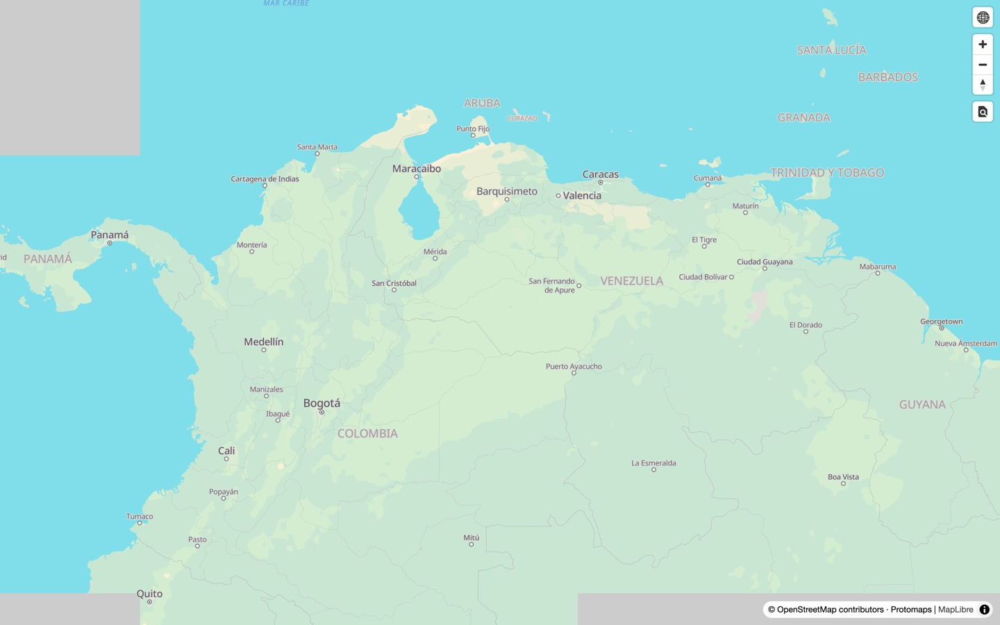

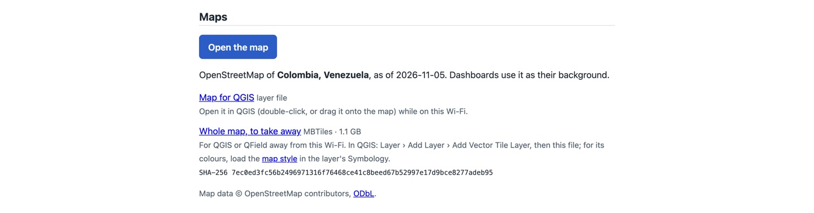
kobo.local.Using the map
On the kit's home page, tap Open the map. Drag to move, pinch or use the + and − buttons to zoom. It works the same on a phone and on a laptop, and needs no app or account.

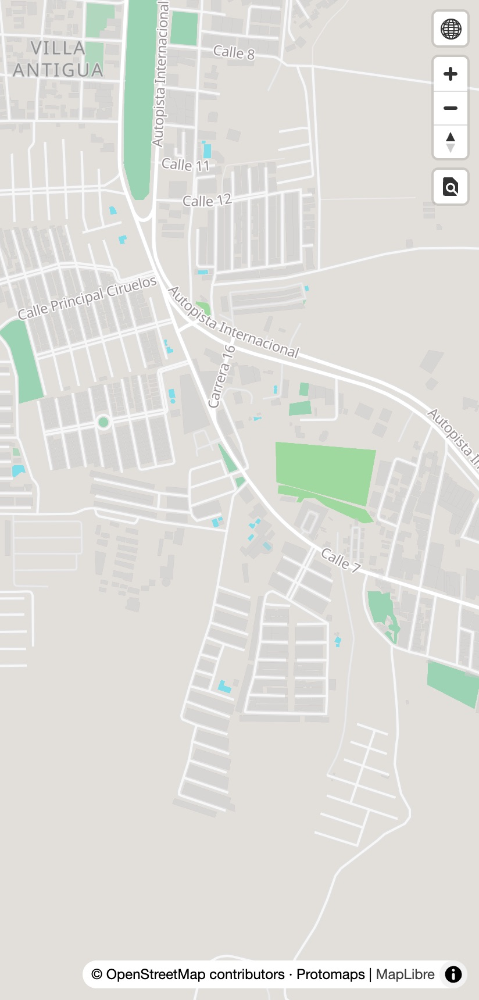

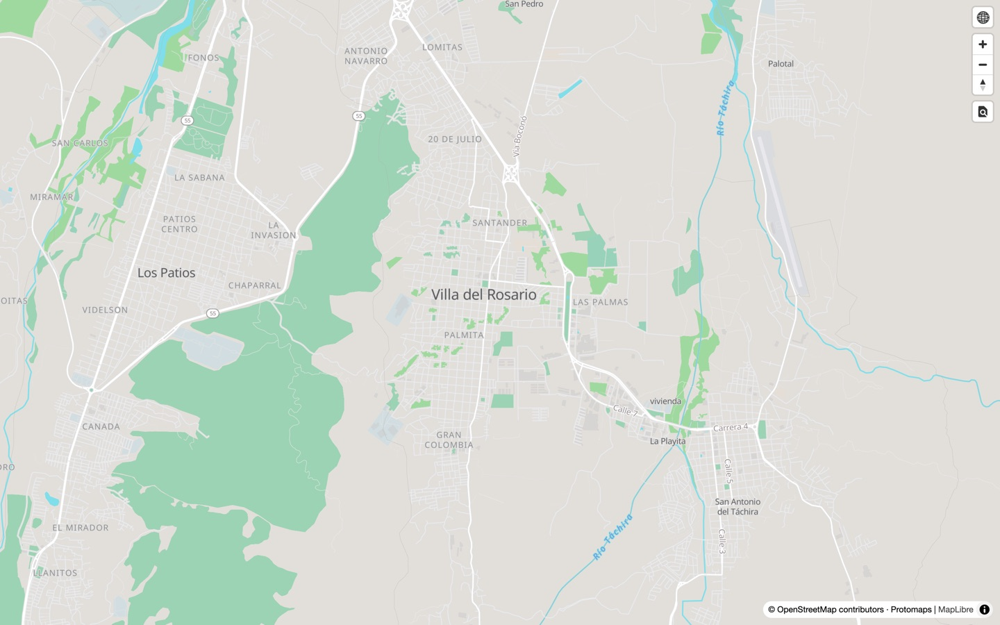

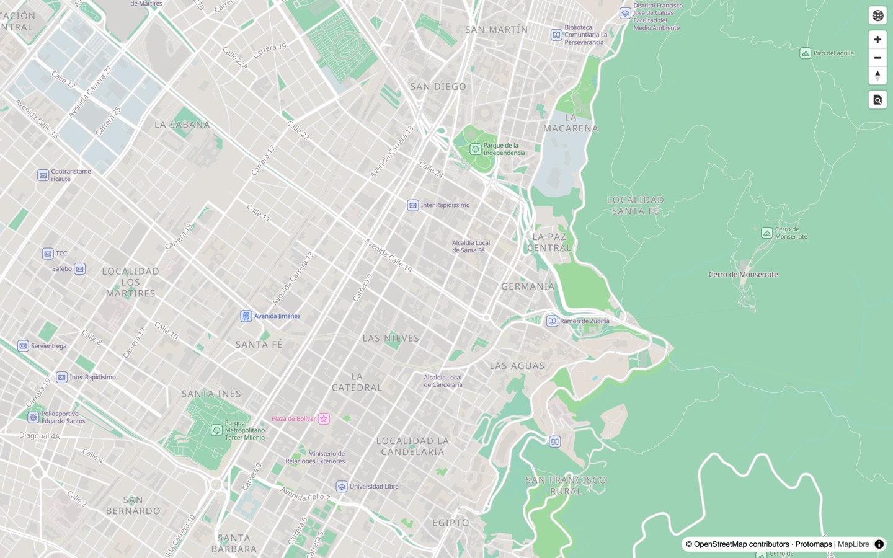
Under dashboards
Every map in a dashboard has the kit's map under it: GPS points from the forms, and areas shaded by district or department. There's nothing to set up: once the kit has a map, dashboards use it.

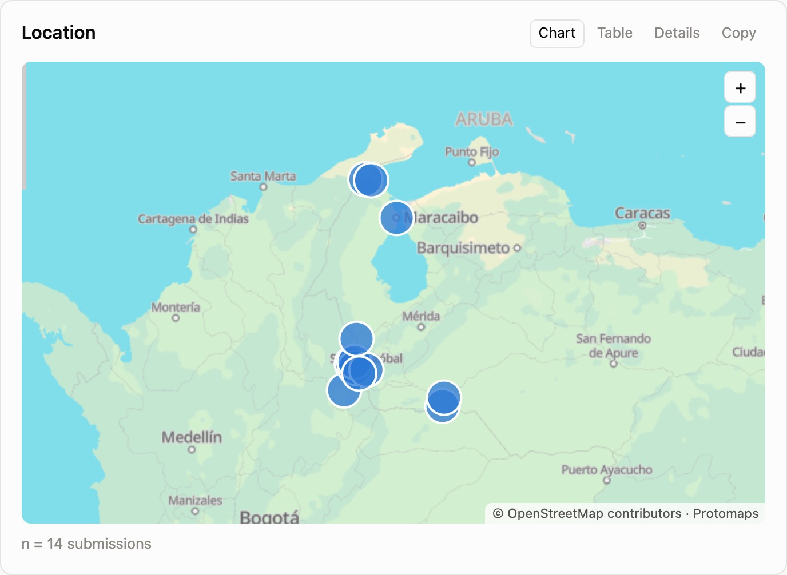

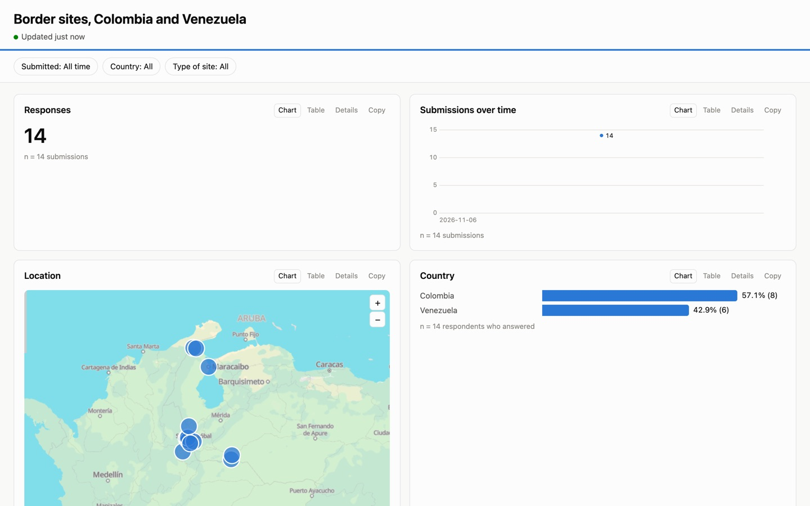
Without a map (a kit prepared for countries it doesn't have), dashboards still show their points, areas and shading, on a plain background.
In QGIS, on the kit's Wi-Fi
- On the kit's home page, under Maps, download Map for QGIS (a small layer file,
kobo-box-map.qlr). - Double-click it, or drag it onto QGIS's map. The kit's map appears as a layer, named after its countries.
- Put it at the bottom of the layer list, under your own layers.
The layer reads from the kit, so it works while the laptop is on the kit's Wi-Fi. It's the same map, labels and all, as in the browser. QGIS and QField are in the kit's library if a laptop doesn't have them.

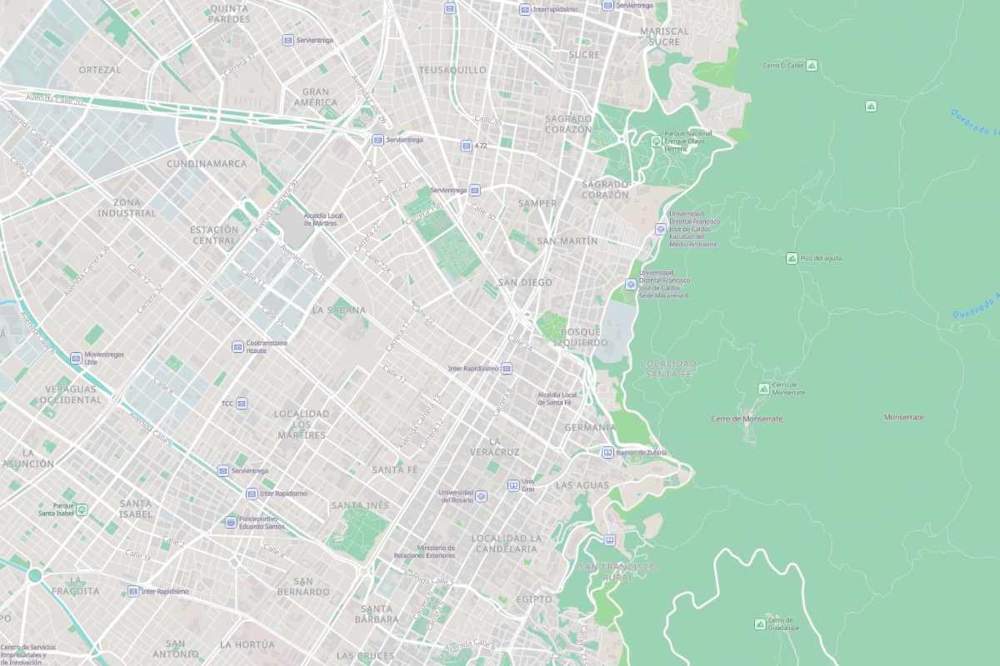
Taking it away
For work away from the kit, download Whole map, to take away (an MBTiles file, 1.1 GB for Colombia and Venezuela) while on the Wi-Fi. Check it arrived whole against the SHA-256 shown beside it.
- QGIS: Layer › Add Layer › Add Vector Tile Layer, then choose the file. For the kit's colours, also download the map style (the link beside the file), then in the layer's properties, Symbology › Style › Load Style, choose it.
- QField: add the file to a QGIS project as above before packaging it for QField. Not yet tried on a phone.

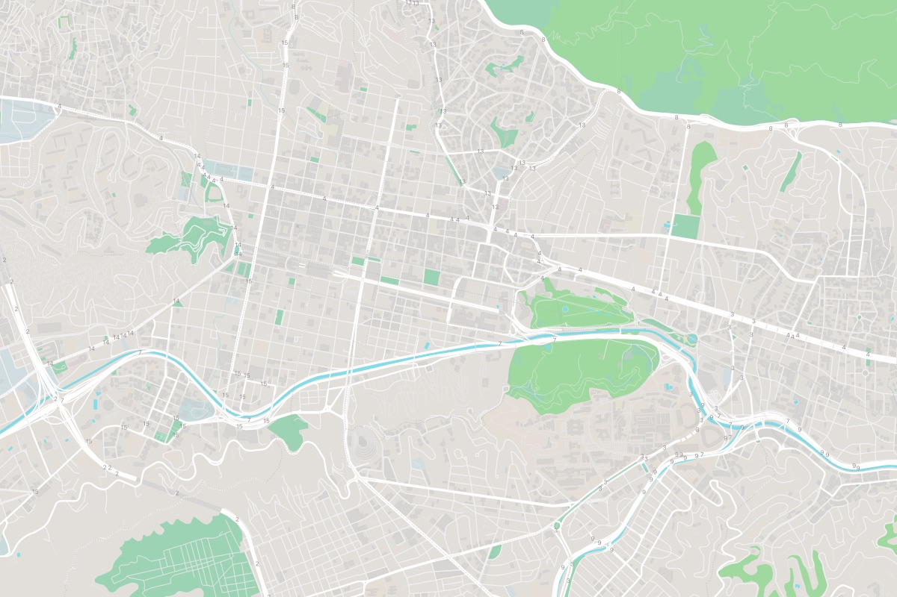
Choosing countries
A kit comes with the countries the deployment needs, usually one or two, chosen when it's prepared. The pilot kits carry Colombia and Venezuela, with their departments, states and municipalities for dashboards. The home page and the status page say which countries a kit has and how recent its map is.
A Kobo admin can change them on the kit itself, at kobo.local/maps (the add or take off countries link under Maps on the home page):
- Sign in with a Kobo admin account. The admin password is on the kit's label card.
- To add a country, choose it from the list and tap Add it to the map. This needs the internet: connect the kit to a network with internet first, at the office for example.
- The page shows the change while it runs. It takes a few minutes for most countries, longer for big ones; you can close the page and come back. Its regions and districts come too, for dashboards.
- To take a country off, tap Take off beside it, then confirm. This works without the internet.
Bring the map up to date fetches the same countries again, with OpenStreetMap's latest changes. Adding a country does that too, for all of them.

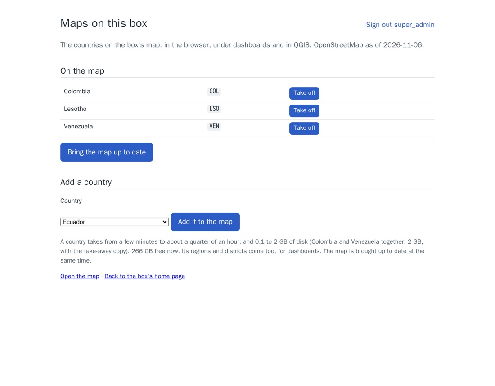

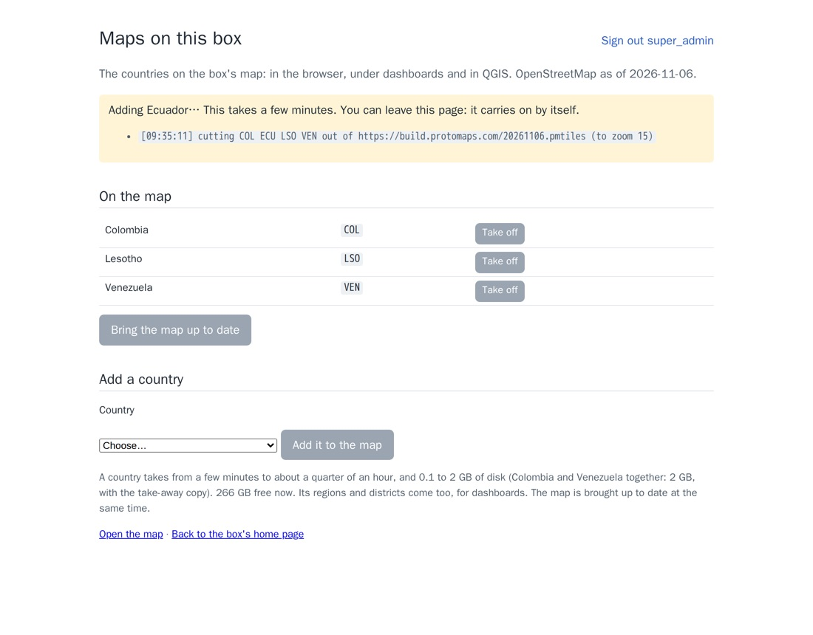

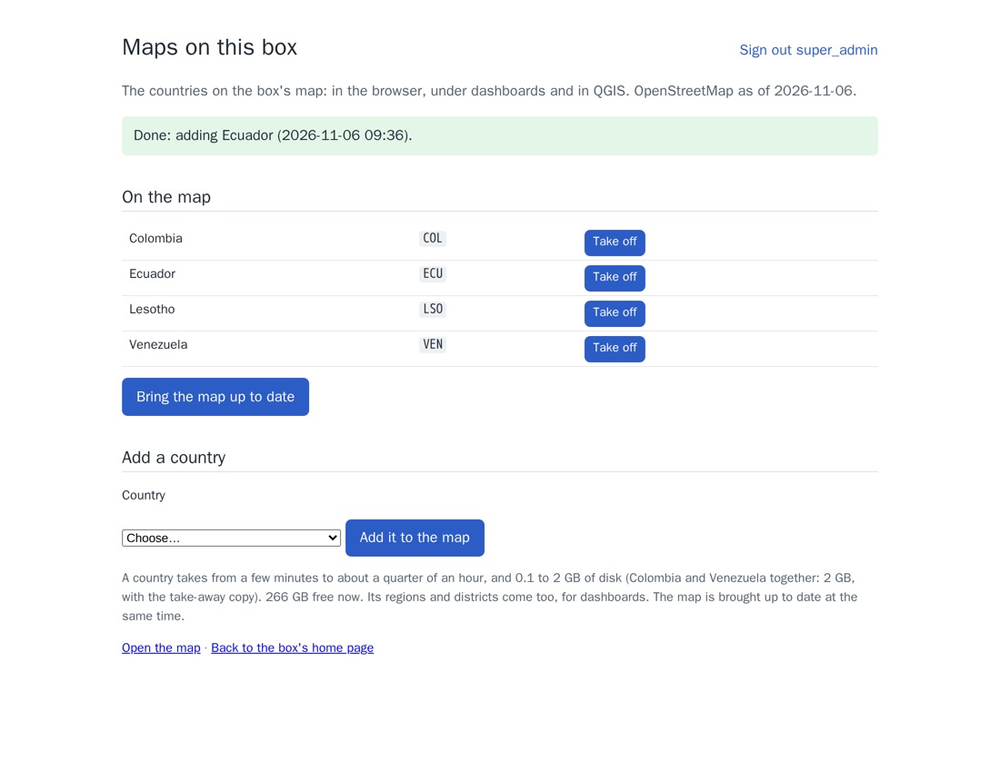

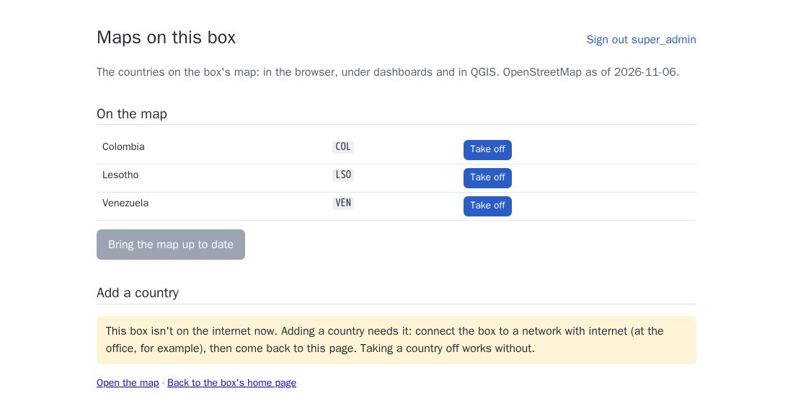

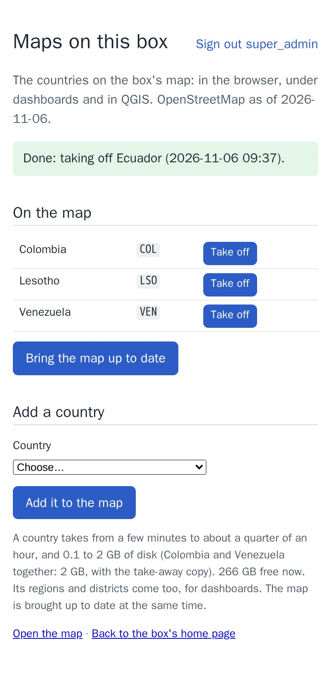

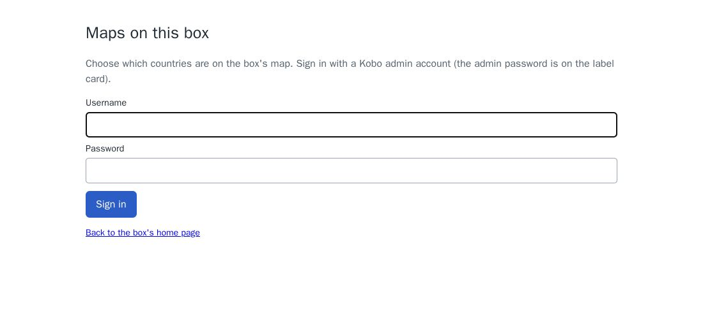

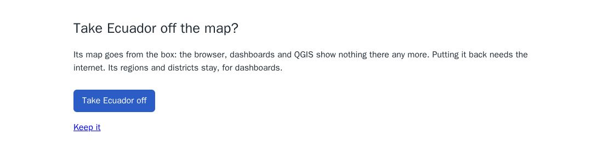
Only Kobo admins can sign in; others see only the sign-in page. Changes made here stay when the kit is updated from a newer content pack. If a newer pack brings a country the kit didn't have, the kit takes the pack's map, and the page offers to add the kit's own extra countries again.

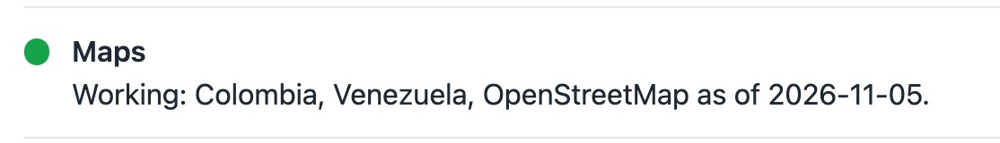
kobo.local/status.When something goes wrong
- Grey instead of a map where you're looking: the place is outside the kit's countries. Ask support for a kit with that country.
- Dashboards with no map under them, or a blank map page: look at the status page. If Maps isn't green, restart the kit. If it stays that way after a restart, call support.
- QGIS shows nothing from the layer file: check the laptop is on the kit's Wi-Fi, and that
kobo.localopens in its browser.
What was tested
On a test kit with the internet cut off, through the kit's own addresses: 27 of 27 checks.
- Street-level map tiles, both kinds, for Bogotá, Cúcuta, Caracas and Maracaibo; each came back from the kit's copy in about 2 milliseconds the second time.
- A place outside the two countries (Lima) got no map and no error.
- The map, its style, fonts and icons, and the map page loaded nothing from outside the kit (also checked in a browser for every screenshot here).
- The QGIS layer file, the take-away file (its size matching what the kit lists), and the map's licence were served; the home page and status page showed the countries.
- The assistant's tools made a dashboard of 14 sites along the border with a map, and the kit's map was under it. Colombia's departments and Venezuela's states (58 areas) came from the kit.
- QGIS (3.42) opened the layer file, and the map with the kit's style, through the kit; and the take-away file with no kit at all.
The admin page, on the same kit: 20 of 20 checks. Online, an admin signed in (a wrong password and a form from elsewhere were refused) and added Lesotho, whose map then answered at Maseru, in 90 seconds; Ecuador took about a minute. With the internet cut off, the page said adding needs it and refused to add, and took Lesotho off in a minute, after asking. Choosing which map a kit keeps on an update was checked for the four cases (a kit's own extra country kept, the pack's new country taken, the extra one offered again).
Preparing the map: Colombia and Venezuela took about a minute and a half on the build machine (33 seconds to fetch them, the rest to make the take-away file). On the kit: 0.9 GB for the map, 1.1 GB for the take-away file, and about 200 MB of memory. Drawing a street-level image the first time took about a tenth of a second on the test kit's processor.
Limits
- Only the countries on the kit. Outside them there's no map.
- As recent as when the kit was prepared. OpenStreetMap keeps changing; the map is updated with each content pack.
- KoboCollect doesn't use it yet. Showing the map under a GPS question on phones needs a map file of an area put on each phone; that's the next step.
- The take-away file in QGIS has no street names: QGIS can't read all of the map style's label rules. On the kit's Wi-Fi, the layer file has them all.
- Adding a country needs the internet on the kit. A kit that never goes online gets new countries from a newer content pack.